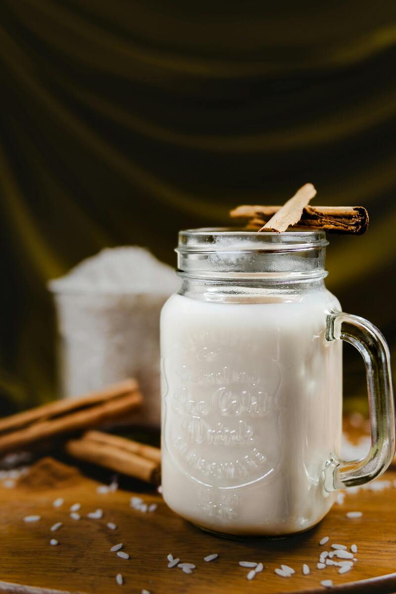

Horchata de Arroz is a popular and refreshing Mexican drink made with ground rice, milk and cinnamon.
Learn how to make this delicious drink with these step-by-step instructions!
One of the reasons Horchata is very popular in Mexico, is that it's the perfect pairing for spicy and flavorful meals.
Making Horchata is very simple. The hardest part is waiting for it to soak. After that, making it is a breeze!
Place the rice in a colander and rinse under cold water. Place the rice, cinnamon sticks (see note #1 below) and 4 cups of water into a bowl. Cover the bowl and refrigerate overnight (preferably) or a minimum of 4 hours.
Once you're ready to blend the rice, remove most of the cinnamon sticks but it's okay to leave small pieces with the rice.
Blend the rice in two separate batches by adding 1/2 of the rice and water with some of the cinnamon stick left behind. Puree until it's very smooth and forms a watery paste like texture. About 4 minutes long.
Using a very fine strainer (or some cheese cloth) pour the blended mixture over a pitcher. Strain out as much liquid as possible, pushing on the solids with a spatula or spoon.
Repeat this process for the rest of the rice, water & cinnamon mixture.
Stir in the canned milks, vanilla, and the additional 4 cups of water. Stir well until everything is incorporated.
Taste and add sugar or water if needed according to taste.
Chill and stir well before serving over ice. It's normal to have some rice paste sink to the bottom of the jar/glass. Just stir before you serve and enjoy!